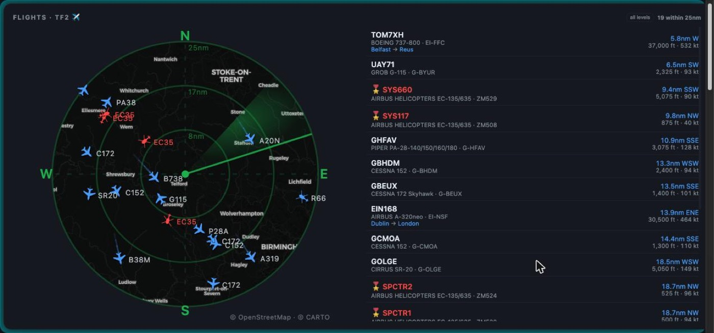

A vertical, always-on dashboard for a rotated side monitor. Seventeen cards, one dependency.

A single-page dashboard that lives permanently on a portrait secondary monitor. It pulls from about fifteen sources, none of which need an API key, and renders them as drag-and-drop cards whose layout persists in the browser. The server is a zero-framework Node HTTP server; the entire project has one runtime dependency, and that is the grid library doing the drag and resize.
Flight radar. Live ADS-B traffic within 25nm, drawn as a real scope over
CARTO basemap tiles. Aircraft render as plane or helicopter silhouettes depending on type,
rotated to their actual track, with fading breadcrumb trails and a drop shadow. Military
traffic, mostly RAF Shawbury's training helicopters, is coloured separately, and anything
squawking 7500, 7600 or 7700 is pulled to the top and flashes regardless of range.
Next up. Merges fixtures, calendar and bin collections into one ticking
countdown to whatever is genuinely next.
Bin collections. Telford & Wrekin's bin day finder, drawn as coloured
wheelie bins. The council only publishes one date per container, which under-reports the
weekly bin; the code projects it across every collection day it belongs to.
Weather. Open-Meteo, with icons drawn from primitives rather than emoji so
they render identically everywhere, and day/night variants chosen from actual sunrise and
sunset times.
Derby County. Four feeds merged and de-duplicated on a normalised title,
with slots reserved for transfer stories so they don't get buried under match reports.
Claude usage. Plan limits and reset windows.
Plus air quality, ISS passes and aurora, night-sky conditions, Apple Calendar over
AppleScript, Spotify, host metrics, public IP, NASA's picture of the day, and Sen's live 4K
feed from the ISS.
It began bound to every interface. That meant any host on the network could read a week of real calendar entries, the public IP and ISP, and machine metrics, and could POST to an unauthenticated endpoint that spent Anthropic credits. A review of the codebase turned up eleven findings, seven of which were fixed:
Bound to loopback. One line, and the largest single reduction in exposure.
Host and Origin validation. Binding to loopback stops other machines but not
a page the browser is already showing. A text/plain POST skips preflight
entirely, and DNS rebinding would have made every read endpoint same-origin. Both now
return 403.
Three XSS sinks closed. The sharpest was calendar event titles: that input
is not the user's, it is whatever an invite says, so anyone able to get a meeting into the
diary could run script in the dashboard's origin, which reaches every local API.
Request body cap on the one endpoint that accepted a body.
Everything degrades rather than blanks. Every source here is
best-effort: community ADS-B receivers, council endpoints, news feeds. The cache serves the last good
value when a refresh fails and marks it stale, so a flaky upstream leaves real if slightly
old data on screen instead of an error. Fetchers that resolve with an error object rather
than throwing never overwrite a good entry, so a transient failure can't pin itself in
place for a whole TTL.
Two map layers, not one. The radar fetches terrain and place names as
separate tile layers so the towns can be brightened on the dark theme and darkened on the
light one, independently of the coastlines underneath. Asking for brighter labels on the
combined layer would just wash out the whole map.
Browsers win arguments about autoplay. The ISS feed takes two clicks from
cold. Chrome will not start a cross-origin video unless the click lands on the player, and
the click that loads the player is spent on the poster. Both autoplay=1 and a
postMessage play command were refused. Asking for the second click beats
shipping a black rectangle that looks broken.
Never bump the layout storage key. Doing that to make a new card appear
discards a hand-arranged layout. Unknown cards are appended below the existing ones instead.